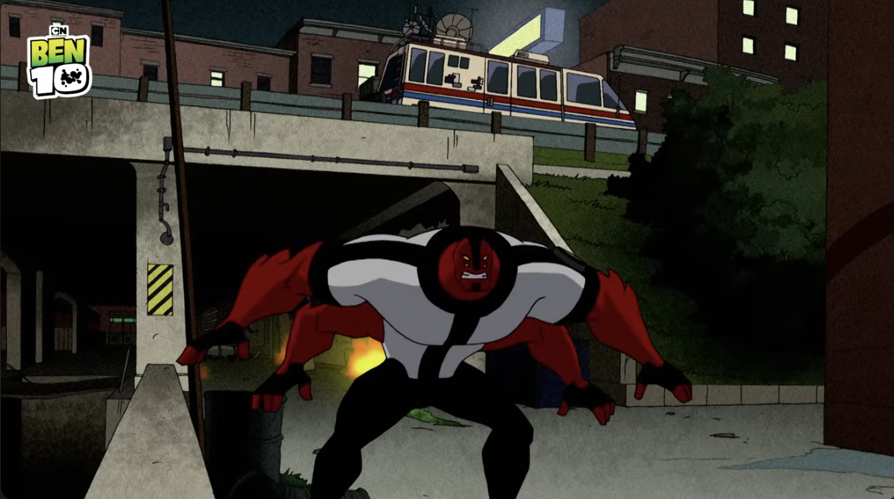
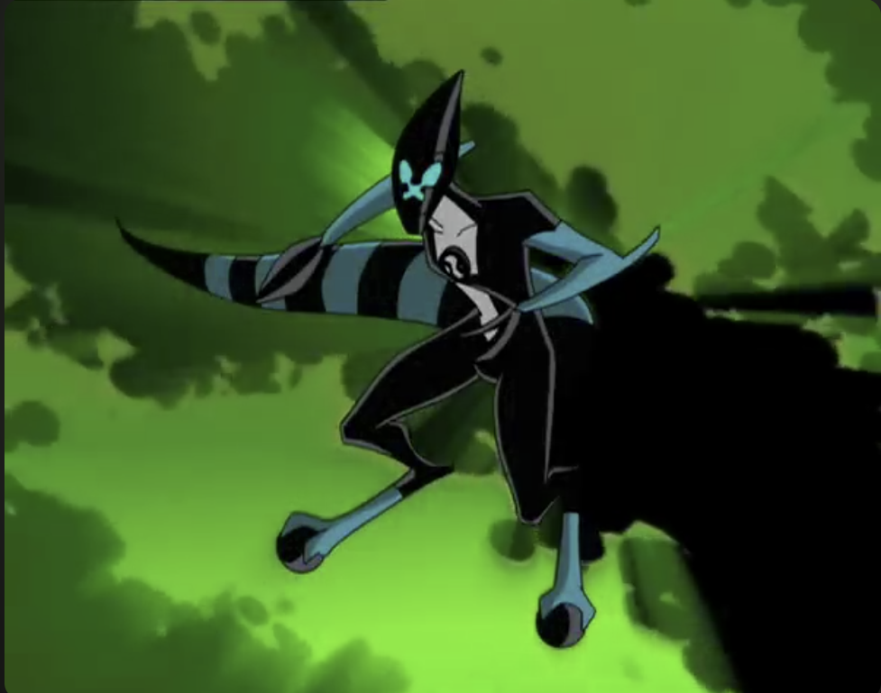
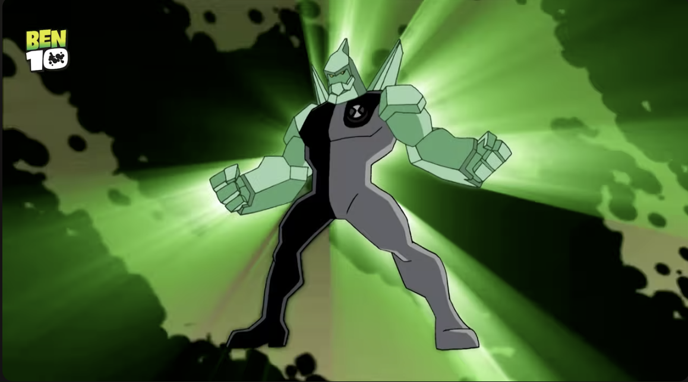
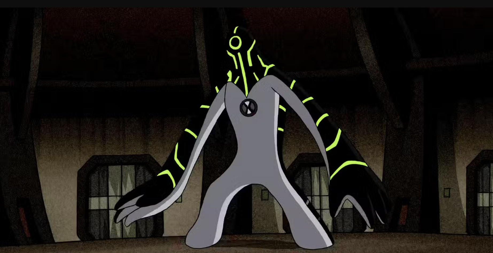
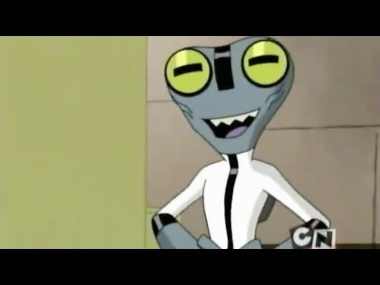
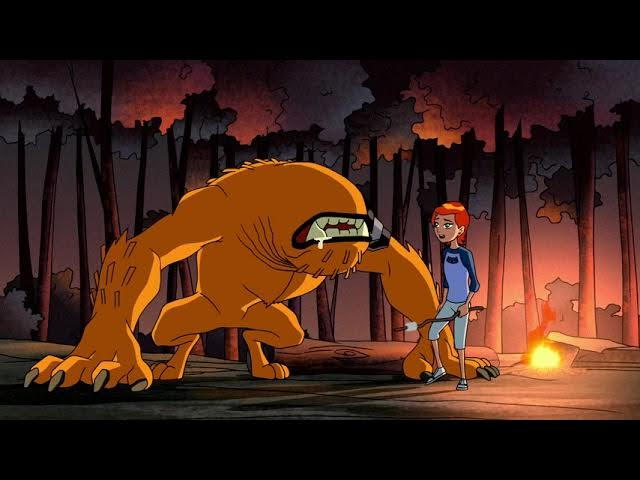
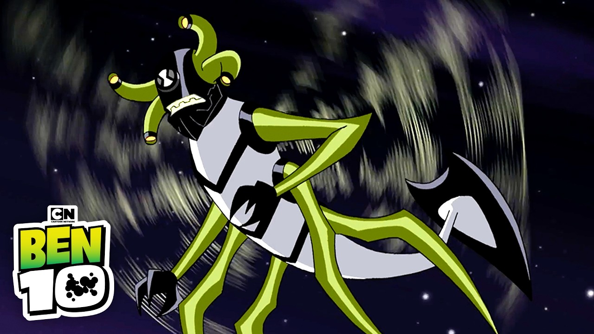
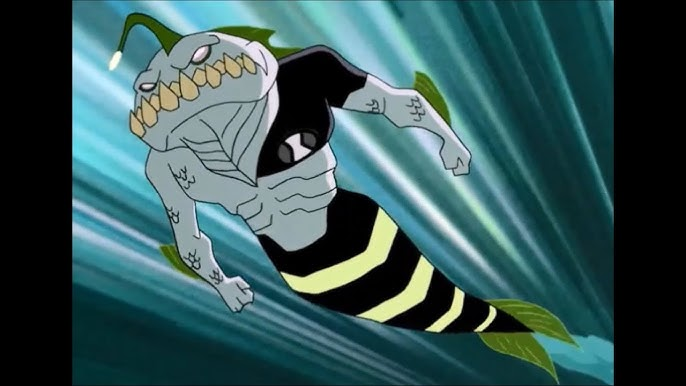
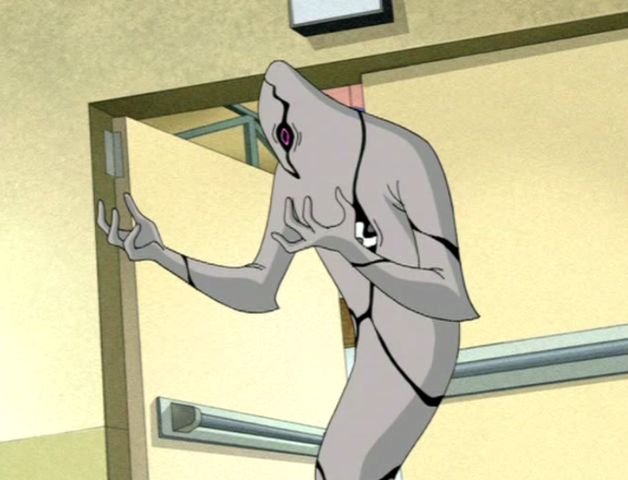

About Classic Ben's Aliens
This page lists the main, original 10 aliens Ben Tennyson can transform into in the classic Ben 10 series. The page also includes small descriptions based on how the aliens appear and what their powers are.
Alien List
Heatblast

Species: Pyronite
Heatblast is a fire-based alien made of molten rock. Heatblast is one of Ben's original and most iconic aliens. He was the first alien Ben transformed into after discovering the Omnitrix. He can generate flames, launch fireballs, and create heat waves. He can also absorb flames from his surroundings and can fly by propelling himself with fire.
Four Arms

Species: Tetramand
Four Arms is a massive, four-armed alien with incredible strength. He can lift heavy objects, create shockwaves, and overpower most enemies with raw physical force. He can jump long distances, create shockwaves by clapping his hands, and overpower most enemies with brute force.
XLR8

Species: Kineceleran
XLR8 is a speed-based alien who is extremely fast, fast enough to run on water, scale walls, and dodge attacks withease. His speed lets him create small tornadoes and disarm enemies before they can react.However, slippery surfaces and obstacles can disrupt his movement. He can dodge attacks, travel long distances instantly, and perform precise maneuvers.
Diamondhead

Species: Petrosapien
Diamondhead's crystal body is extremely tough and can reflect energy blasts. He can grow crystal weapons, create shields, and fire crystal shards. His body can shatter under extreme force, but he can regenerate broken pieces.
Upgrade

Species: Galvanic Mechamorph
Upgrade is a liquidy metal alien. Upgrade can merge with technology and improve it. When fused with machines, he can reshape them, enhance their power, and control them completely. His liquid‑metal body allows him to stretch, flatten, and fire energy beams. He is vulnerable to electricity.
Grey Matter

Species: Galvan
Grey Matter is tiny but incredibly intelligent. He can solve complex problems, hack technology, and slip into tight spaces. His small size makes him physically weak, but his intelligence often helps Ben escape dangerous situations or outsmart enemies.
Wildmutt

Species: Vulpimancer
Wildmutt is a feral, animal-like alien with no eyes. He relies on enhanced smell and hearing to sense his surroundings. He is fast, strong, and can leap long distances. His lack of vision can be a disadvantage in chaotic environments.
Stinkfly

Species: Lepidopterran
Stinkfly can fly quickly and maneuver through tight spaces. He shoots slime and acidic goo from his eye stalks and tail, which can trap enemies or dissolve obstacles. His wings are fragile, and he struggles in strong winds or cramped areas.
Ripjaws

Species: Piscciss Volann
Ripjaws is a powerful aquatic alien with sharp teeth, strong swimming ability, and a bioluminescent lure. He can breathe underwater and move extremely fast in the ocean. However, he cannot stay on land for long without drying out.
Ghostfreak

Species: Ectonurite
Ghostfreak can phase through walls, turn invisible, and float. His body is ghost-like, allowing him to avoid physical attacks. He is vulnerable to sun light in his raw form , and his eerie appearance often unsettles Ben. His powers make him one of Ben's most stealth focused transformations.
Random Omnitrix Alien Generator
Click the button to see which alien from the Omnitrix you get!